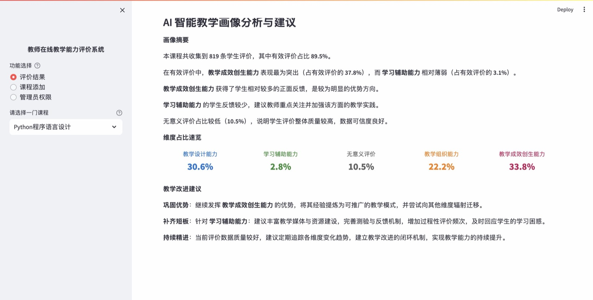
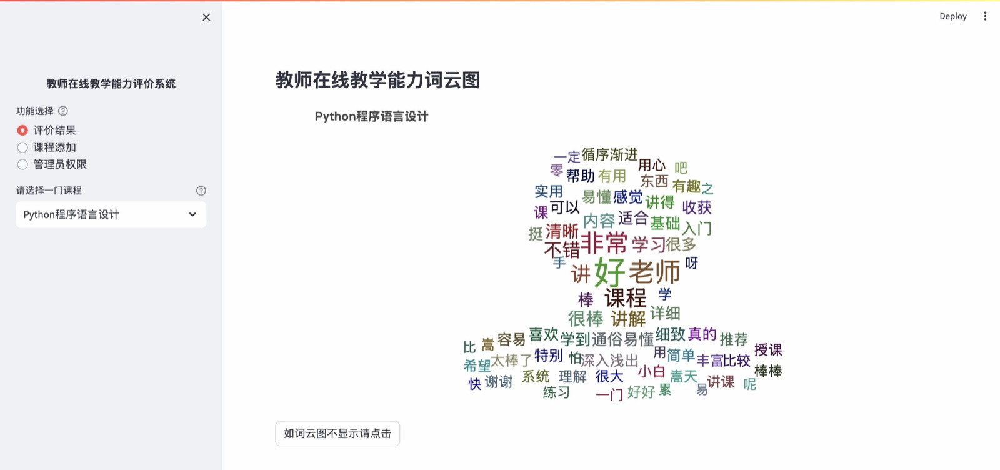
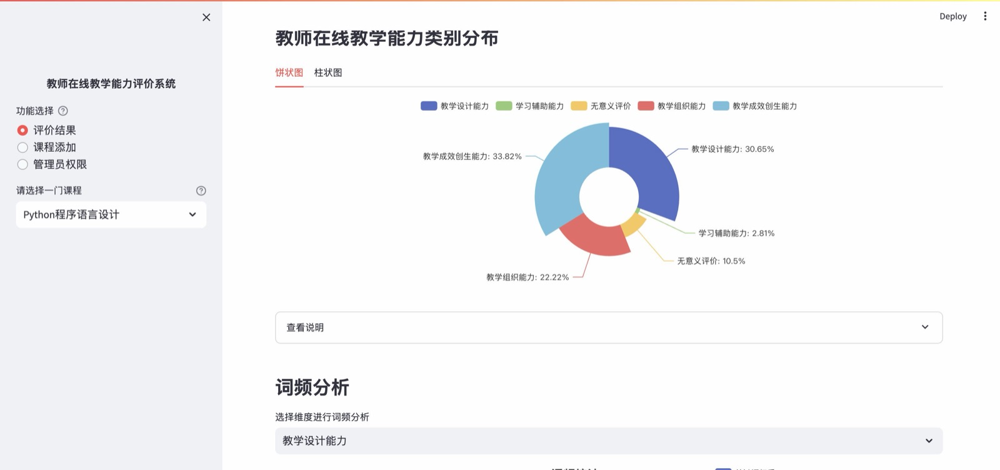
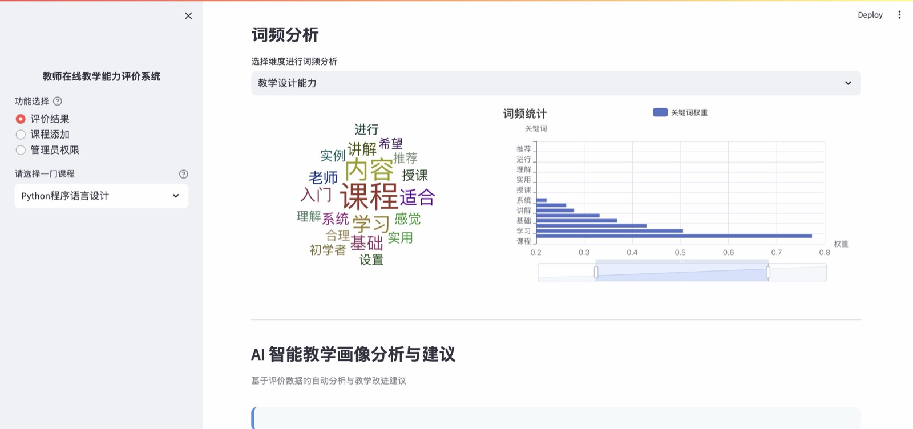
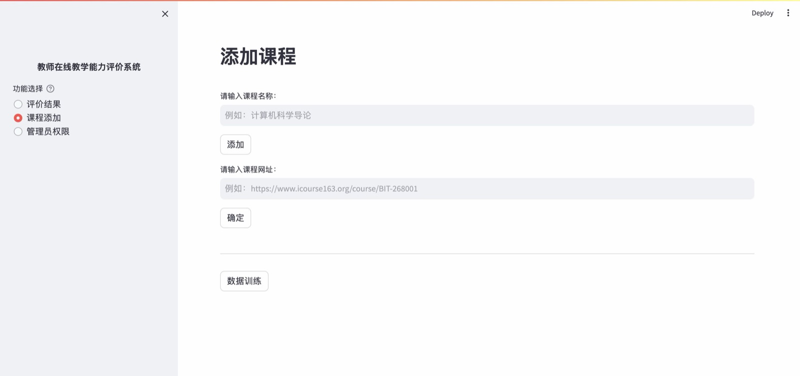

网页 / APP · 04
教师在线教学能力评价系统
在线课程下面动辄上千条学生评价，但对教师来说几乎是不可读的。 这个系统用 BERT 把评论自动归入教学能力维度，再把结果变成可以直接行动的改进建议。
- 年份
- 2026
- 角色
- 数据 / 模型 / 前端
- 技术
- Streamlit · PyTorch · BERT
- 数据源
- 中国大学 MOOC 评价

AI 智能分析：画像摘要 + 维度占比速览 + 教学改进建议
问题与方案Overview
MOOC 平台的课程评价区里，“老师讲得好”“很有收获”这类话占了绝大多数。 它们是善意的，但对改进教学没有任何指向性。 真正有价值的信息——比如“视频里的例子太旧”“作业反馈太慢”—— 被稀释在噪声里，教师很难捞出来。
我的方案是把评价结构化：先用 BERT 中文文本分类模型把每条评论 归入一个教学能力维度，顺便把无意义评价单独标出； 再按维度做词频与关键词分析，让教师看到自己在哪一维度上被反复提到什么。 最后由规则引擎把这些分布转成一段可读的画像摘要与三类改进建议。
五个评价维度
- 教学设计能力 — 教学目标、教学内容、教学活动（内容体验）
- 学习辅助能力 — 教学媒体与环境、测验评价与反馈、教学资源（学习辅助体验）
- 教学组织能力 — 教学风格、教学技能、教学状态（教师评价）
- 教学成效创生能力 — 认知层面、技能层面、情感层面（价值体验）
- 无意义评价 — 仅表达整体好感、无具体指向的评论，单独计量以衡量有效评价比例
功能界面Screens




实现流程Process
数据采集
用 Requests 编写 MOOC 评论爬虫，按课程网址分页抓取学生评价， 落地为原始数据文件，供后续标注与训练使用。
标注与编码框架
依据教学能力的二级维度制定编码框架，人工标注一批评论作为训练集， 确保四个能力维度与“无意义评价”之间的边界一致。
模型训练
基于 Bert-Chinese-Text-Classification-Pytorch 训练分类模型 （同时试过 ERNIE 及若干变体），对新课程的评论批量推理归类， 结果写入按维度分表的数据文件。
分析与可视化
用 jieba 分词配合停用词表清洗文本，TextRank 提取维度内关键词， 再用 PyEcharts 与 streamlit-echarts 输出词云、饼图、柱状图与条形图。
规则引擎生成建议
比较各维度占比，自动识别优势维度与薄弱维度、计算有效评价比例， 并从优势巩固、短板补齐、评价优化三个方向输出针对性的教学改进建议。
Streamlit 封装
以侧边栏导航组织“评价结果 / 课程添加 / 管理员权限”三个功能区， 教师选择课程即可查看完整画像，无需接触任何代码。